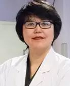
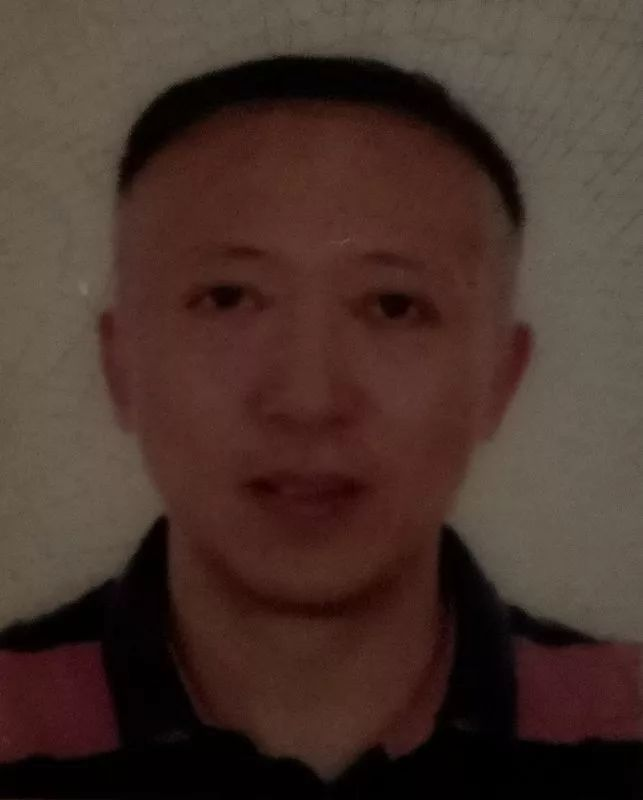
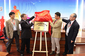
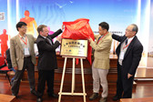
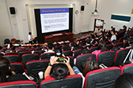
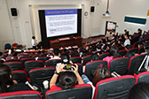

-
参会嘉宾
-
戴尅戎
中国工程院院士，上海交通大学医学院附属第九人民医院终身教授，上海交通大学医学院数字医学临床转化教育部工程研究中心主任。我国骨科生物力学的带头人，建立了国内医院中第一所骨科生物力学研究室，对人工关节、骨再生与骨科康复等骨科基础研究与临床技术的发展做出了贡献。
-
顾冬云
博士，教授，博士生导师。上海交通大学数字医学临床转化教育部工程研究中心常务副主任，中华医学会数字医学分会常委委员。主要从事骨科及运动生物力学、康复医学工程、移动数字医疗、人体运动建模仿真与特征识别的医工交叉科研工作，先后承担国家自然科学基金、科技部国际合作等多项国家与省部级课题，发表期刊论文60余篇、两次获中华医学会优秀论文奖、主编和主译专著4部、参编专著5部，第一发明人授权国家发明专利４项、软件著作权5项。
-
刘宇
上海体育学院教授、博士生导师，教育部“长江学者”特聘教授， “运动健身科技”教育部重点实验室主任，亚洲运动教练科学学会副主席，曾任国际生物力学学会（ISB）执委、中国力学学会、中国生物医学工程学会生物力学专业委员会委员，中国体育科学学会运动生物力学分会副主任委员。研究方向为运动生物力学，在该研究领域具有丰富的研究经验及较高的国际影响。
-
刘安民
博士，英国 Salford 大学健康学院健康研究中心研究员。长期从事人体生物力学相关及足踝生物力学研究工作，研究领域包括步行机器人、足踝运动仿真、步态分析、临床生物力学在假肢，矫形，脑瘫及关节炎诊治中的应用研究，在人体步态分析、生物力学建模与仿真分析方面具有丰富的教学与研究经验。
-
郑乃权
美国北卡罗来纳大学夏洛特分校工学院终身教授，博士生导师, 生物医学工程和科学中心生物力学和运动研究负责人，美国骨科杂志、中华医学杂志英文版等8份杂志编委，在骨科生物力学和运动医学领域辛勤耕耘30多年，在骨科生物力学、运动康复生物力学、老年人运动学、以及棒球、高尔夫等运动损伤研究领域获得多项杰出科研成果，是骨科生物力学和运动医学领域的领军人物。
-
Rezaul Begg
澳大利亚墨尔本维多利亚大学健康与体育（IHES）学院教授，辅助技术创新（PATI）主席，是步态生物力学研究领域的国际知名专家，致力于步态与智能技术研究，包括步态与平衡生物力学，辅助技术与可穿戴传感器、基于机器学习的运动模式识别和步态康复研究、以及面向中风患者、糖尿病患者、高跌倒风险老年人等病理性步态的新技术研究。已发表论文近250篇，研究获澳大利亚政府研究基金、澳大利亚研究委员会和国家健康与医学研究委员会基金资助。
-
陈生弟
上海交通大学医学院附属瑞金医院二级教授、主任医师、博士生导师，神经科及老年病科主任、教研室主任、研究所所长。现任国际神经病学联盟帕金森病及相关疾病研究委员会委员、中华医学会神经病学分会副主委兼帕金森病及运动障碍学组组长等职，长期从事帕金森病及运动障碍和阿尔茨海默病及其他痴呆的发病机制及诊治转化研究，在该领域具有丰富的临床经验，取得多项突出科研成果。
-
马昕
华山医院骨科教授、主任医师、博士生导师、骨科副主任、华山医院副院长。目前任中华医学会骨科学分会足踝外科学组秘书长，中国医师协会骨科学分会足踝专科委员会副主任委员，中华医学会上海市骨科分会足踝外科学组组长，中华医学会骨科分会足踝外科医师培训中心主任，美国足踝外科协会（AOFAS）会员，中华医学会上海创伤学会副主任委员，中华医学会创伤学会委员。
-
郑洁皎
现任复旦大学附属华东医院康复医学科主任，教授，硕导，中国医师协会康复分会常委,中国康复医学会康复治疗专业委员会副主任委员,中国康复医学会理事。长期从事心脑血管疾病康复的研究，在该领域具有丰富的临床经验，发表过多篇高水平学术论文，担任过多本中国康复研究领域核心杂志的编委。
-
蒲放
北航生物与医学工程学院教授、副院长。研究领域包括康复工程、生物力学、航空航天医学工程。主要从事步态分析、有限元仿真建模、脑瘫儿童矫形及运动功能康复、老年人康复评价与训练等研究，先后主持5项国家自然科学基金项目和2项国家科技支撑计划项目，在国内外期刊发表学术论文50余篇。
-
张宽
博士，现任首都医科大学生物医学工程学院副院长、教授、博士生导师。毕业于美国哥伦比亚大学，获得博士学位。曾任美国哥伦比亚大学助理教授，哥伦比亚大学圣克鲁斯－罗斯福医院能量代谢中心实验室主任，中科院苏州生物医学工程与技术研究所百人计划研究员等职。主要从事生物力学、康复工程和人体能量代谢等方向的研究，主持美国和中国多项国家和省部级科研项目，发表学术论文80余篇。担任国家科技奖励办、中国药监局器械评审中心评审专家；《北京生物医学工程》和《生物医学工程研究》编委等职。
-
郝卫亚
博士，国家体育总局体育科学研究所研究员，博士生导师，“新世纪百千万人才工程”国家级人才，国务院政府特殊津贴专家。长期致力于为国家体操、自由式滑雪空中技巧、跳水等项目提供运动生物力学相关的科技保障工作。研究领域：人体运动建模与计算机仿真，运动装备与运动鞋生物力学，运动技术分析，损伤生物力学，法医生物力学等。国内外发表学术论文100余篇、论著4部，获得省部级以上奖项和荣誉10余项。担任中国体育科学学会理事、运动生物力学分会秘书长，全国人类工效学标准化技术委员会委员，北京生物医学工程学学会生物力学专业委员会委员，《中国运动医学杂志》、《医用生物力学》编委，国家体育总局备战奥运会专家组专家。
-
李增勇
博士，教授。国家康复辅具研究中心，民政部康复辅具技术与系统重点实验室副主任，北京航空航天大学研究生兼职导师。目前担任中国生物医学工程学会康复工程分会委员，青年主任委员，中关村医疗器械联盟理事，中国残疾人康复协会康复工程与辅助技术专业委员会常务委员，中国光学学会生物医学光子学分会委员。研究方向包括：近红外脑功能与行为特性研究，智能康复技术，肢体康复训练模式与效果评估。
-
郭士杰
1992年3月毕业于日本东京工业大学，获工学博士学位。现任河北工业大学教授，河北省机器人感知与人机融合重点实验室主任，博士生导师。 长期以来一直从事高科技养老助残方面的研究开发工作，主持研制了柔性步行辅助机器人，移乘护理机器人，智能护理床等高端护理/康复设备。入选河北省“百人计划”创新人才，国家“千人计划”创新长期项目。 主要学术兼职包括复旦大学智能机器人研究院特聘讲座教授，河北工业大学学报主编、河北省与科技部共建电工装备可靠性与智能化国家重点实验室学科带头人等。
-

姜淑云
医学博士，主任医师，硕士生导师。现任上海中医药大学附属岳阳中西医结合医院步态分析室主任，美国步态与临床运动分析学会（GCMAS）会员，美国脑瘫发育医学学会（AACPDM）会员，中国残疾人康复协会肢体残疾康复专业委员会儿童青少年学组委员。目前主要从事运动及步态异常,儿童肢体发育和残疾预防的临床、科研和教学工作。承担上海市市级医院新兴前沿技术联合攻关项目和上海市博士点基金项目。发表论文20余篇。
-
Fabio Rossi
意大利人，毕业于米兰工学院，生物工程博士，电子工程博士。意大利运动分析协会成员，米兰瓦杜斯医院维拉·贝列塔康复中心研究员，米兰工业大学生物医学工程中心研究员，研究方向为人体运动分析，脊柱姿势评估，步态分析，肌电技术应用，三维测力技术，人机功效学。
-
蔡宗远
上海交通大学生物医学工程学院特别研究员，博导。2011年至2016年4月任美国哈佛医学院/麻省总医院骨科部博士后、讲师。加盟上海第九人民医院，戴尅戎院士领导的，医学3D打印创新研究中心及教育部数字医学临床转化工程研究中心。研究领域包括骨科工程、运动科学、影像生物力学、计算生物力学。累计发表53篇SCI/EI论文，128篇国际会议论文。担任11本领域内绩优SCI/EI期刊审稿委员。
-
陈文明
上海理工大学上海市康复器械工程技术研究中心副教授，澳大利亚墨尔本大学博士后，新加坡国立大学生物医学工程专业博士，专长是肌骨生物力学和病患特异性计算模型，及在矫形植入体和糖尿病足生物力学，个性化医疗器具及其足踝康复辅具的研发创新。获得过多项国际学术大奖，有多个海外高校研究工作经历，有多项培训指导经验，发表过多篇学术论文，参加过各类大型国际学术会议。曾担任韩国仁济大学生物医学工程助理教授，2015年被亚太地区生物力学协会授予生物力学方面的青年科学家Yamaguchi 奖牌。
-
牛文鑫
同济大学医学院副教授，博士生导师，生物力学实验室负责人，上海市养志康复医院（上海市阳光康复中心）科教科副科长。中华医学会医学工程学分会数字骨科学组基础工作委员会副主任委员；SICOT中国部数字骨科学会常务委员；中国康复辅助器具协会肢体功能重建与外固定专业委员会常务委员；医工整合联盟常务理事。研究方向为运动与康复生物力学，近10年发表期刊论文150余篇，获得教育部学术新人奖、教育部自然科学奖一等奖和黄家驷生物医学工程奖一等奖等奖励。作委员会副主任委员；SICOT中国部数字骨科学会常务委员；中国康复辅助器具协会肢体功能重建与外固定专业委员会常务委员；医工整合联盟常务理事。研究方向为运动与康复生物力学，近10年发表期刊论文150余篇，获得教育部学术新人奖、教育部自然科学奖一等奖和黄家驷生物医学工程奖一等奖等奖励。
-

胡海
骨科副主任医师，硕士生导师，上海医学特约编委，在荷兰阿姆斯特丹自由大学医学中心从事运动医学近七年，获得骨科生物力学博士学位。自2012年3月引进到上海市第六人民医院骨科工作，获国家自然基金面上项目2项及上海市2013年浦江人才计划资助。从事骨科创伤及运动医学、骨科临床生物力学研究。近年在国内外学术期刊发表相关论文近20篇。
-
王冬梅
博士，副教授，博士生导师。在上海交通大学机械与动力工程学院生物医学制造与生命质量工程研究所从事生物医学工程领域的研究工作，研究方向包括人体骨骼肌肉系统之生物力学、假体设计及生物力学仿真分析、应力矫形数值仿真及矫形支具的设计、人体运动康复生物力学与康复评价平台建立。
-
傅维杰
上海体育学院副教授，硕士生导师，并于教育部重点实验室从事肌-骨系统生物力学和运动装备/器材研发。现为国际生物力学学会、国际运动生物力学学会、世界华人生物医学工程学会、中国体育科学学会会员，现主持国家自然科学基金青年项目、教育部博士点基金新教师类和上海市教委科研创新项目等。近五年共发表SCI、EI和国内核心期刊论文30余；参加国内外学术会议20余次，发表会议论文近50篇。
-
张旻
上海中医药研究院 骨伤科研究所 助理研究员。
英国索尔福德大学健康学院 康复科学硕士。
英国索尔福德大学大学健康学院，人体运动科学，生物力学，生物医学工程学博士（PhD Candidate）。
作为第一负责人主持国家自然科学基金，上海市卫生计划委员会项目，上海中医药大学预算内项目等多项课题。近5年作为第一作者发表SCI,EI，国际会议论文,国内核心期刊论文15篇。研究方向包括膝骨关节炎的生物力学评估、干预、足踝生物力学以及脊柱生物力学等。
-
李勇强
医学博士，副主任治疗师，副教授，江苏省人民医院钟山康复分院院长助理博士，中国整合医学会治疗专委会副主任委员，江苏省社区康复专业委员会常务委员，曾任国家青年女足队医，江苏女排队医，四川地震伤员国家康复中心治疗师长，青海玉树地震伤员康复专家指导组成员，昆山爆炸康复专家组成员。
-
阎俊蒲
医学硕士，四川省骨科医院医学中心医生，主要从事运动功能评估工作，曾参与《四川省优秀运动员科学训练负荷监控与伤病防控的应用研究》，《国家射击队备战里约奥运会运动伤病医疗保障服务》等多项课题。
-
郑晓晨
博士研究生，经济与创新管理 (DEGIN，马德里理工大学，马德里自治大学和马德里康普顿斯大学联合培养)
研究领域涉及：机器学习支持下的物联网(IoT)技术在不同领域的应用；基于可穿戴设备和深度学习算法的原发性震颤的评估；基于区块链技术的个人数据分享等。
 傅维杰
傅维杰
 



 
